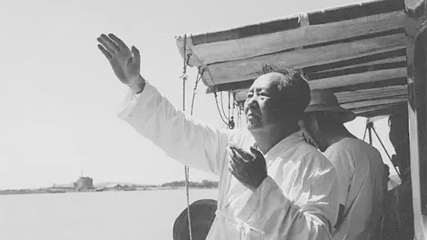

|
回目录 回主页 |

假象——公开的无产领袖 真相——绝密的超级富翁1.1、毛主席说“我是无产阶级”毛主席自称是无产阶级，在物质上一无所有。请看《毛泽东人生纪实》的一段故事：【1966年夏，邢台突然发生地震，波及北京。 这一天，毛泽东正在中南海的住处办公。护士长慌忙走进来，一边说地震了！地震了！一边搀扶起毛泽东就往屋外走。刚走到门口，毛泽东又返回屋里去，把案头上放着的一包牛皮纸挟在腋下，这才随护士长走出屋外。 护士长看见毛泽东只挟了包牛皮纸就问：“主席！屋里那么多好东西您不拿，为什么就拿这包纸啊？” 毛泽东回头瞥了一眼“主席办公室”，感叹地对护士长说：“那些东西都不是我的，我身无长物，只有这些自己写的诗稿属于我的。我是无产阶级，一无所有啊！”】 按照正宗的马克思主义理论，无产阶级指的是产业工人，农村的雇工劳动者不在此列。到了庸俗、功利的“马克思主义者”毛泽东笔下，“无产阶级”不仅仅是产业工人，而且包括所有最贫穷的阶层：雇农、半佃户、手工业者、小商贩、苦力，甚至乞丐。毛泽东的阶级划分，不是从“社会生产的一定历史地位”及其同生产资料一定的关系出发，而是从收入和生活水准出发，这是对马克思主义阶级概念的庸俗歪曲。 无论是马克思主义理论的无产阶级，还是毛泽东思想的无产阶级，毛主席都不是，因为他既不是产业工人，更不是穷人，而是拥有大量私人钱财、挥金如土的超级特大富翁。 1.1.1、富翁毛泽东当众撒谎没有存款毛主席不但在手下奴才面前撒谎，在外国人面前也随便当众撒谎。1961年9月，蒙哥马利第二次访问中国大陆地区。政治上幼稚而天真的将军，问毛主席准备的继承人是谁？毛主席说：“这个词不好，我一无土地，二无房产，银行里也没有存款，继承我什么呀？红领巾唱歌：‘我们是共产主义的接班人’，我看叫‘接班人’好……”毛主席当时已有一百多万元人民币存款，但是张嘴就撒谎没有存款。请看《毛泽东人生纪实》的一段： {除工资外，毛泽东拥有大笔稿费。在五十年代，稿费数额就达人民币100多万元……把这笔巨款全部交到中央办公厅特别会计室保管。} 毛泽东的巨款并不交公，只是交给中央办公厅特别会计室保管而已。特别会计室不可能保存那么多现金，还是得到银行帮毛主席存起来。毛泽东在银行里有存款吗？答案毫无疑问是肯定的：“有”。那么，毛主席当众说自己在银行里没有存款，就是当众撒谎。 鄙人孤陋寡闻，除了知道中共中央办公厅有特别会计室，没有听说过哪个单位有特别会计室，实在搞不清楚当时中共中央办公厅的特别会计室是否专门为毛主席服务而设置的，若是如此，特别会计室运转所需的办公费用、人员工资等等支出应该加到毛主席所耗费的民脂民膏大山上。 1.2、几亿人悼念“无产领袖”1976年9月9日，主宰中华大地九亿多中国人命运的中共中央主席毛泽东死了。连续数天，到处设毛主席灵堂，进行悼念活动。鄙人家乡广东省兴宁县，位于广州市东边，其时县城离广州公路里程377公里，坐汽车十二个小时左右才能到达，与毛主席的死尸更是远隔千山万水，到各单位毛主席灵堂悼念的人数，达到50多万。9月18日，北京安排了百万人汇聚在天安门广场，举行极其隆重的追悼会。天安门广场下半旗志哀，横贯天安门城楼的横幅上写着：“伟大的领袖和导师毛泽东主席追悼大会”。下午3时整，追悼大会开始。全体肃立，百万人默哀3分钟。由500人组成的庞大军乐团奏起哀乐。与此同时，除了港澳台地区外，中国所有工厂、矿山、列车、货轮和军舰，汽笛长鸣。更有甚者，除了港澳台地区外，中华人民共和国九百多万平方公里土地上，到处同步举行毛主席追悼会。在不崇拜毛主席就难以生存的毛泽东统治区，除了年纪特别老的人和特别小的人，都必须参加毛主席追悼会。鄙人家乡兴宁县刁坊公社墨池大队的农民，集中在墨池小学分教处——原米筛小学的操场上，排成纵横整齐的方阵，庄严肃穆地收听大喇叭实时转播的电台广播，远隔四五千里参加毛主席追悼会。当时天气尚热，有的农民不堪紧张气氛和太阳晒烤，加上身体虚弱，中暑倒地，抬到场边即时受到严阵以待的赤脚医生的抢救。规模达到几亿人同时参加的追悼会，在人类历史上无疑是空前的，估计也是绝后的。 从表面现象上看，描述为“八亿神州共悲鸣，举国上下同哀悼”，说得过去。但是，人们内心实际感受如何，各人心事各人知。就我而言，我对于毛主席的死亡，绝对没有任何悲伤之感。我1960年一出生就跟随六亿多中国人一起挨饿（就在这一年，毛泽东统治区因为毛泽东人祸——大跃进运动、人民公社运动、大炼钢铁运动、深翻土地运动等等，造成空前大饥荒，饿死两三千万人，净减少人口一千多万）；1967年上学以后经常饿着肚子也必须在课堂上唱《东方红》、《大海航行靠舵手》、《爹亲娘亲不如毛主席亲》等等肉麻颂歌；有时在家听我父亲唱：“我好比笼中鸟，有翅难飞”；1974年不许我上高中，提早结束求学生涯回乡务农；1975年5月只能带着假证明偷偷摸摸到龙门县搞副业……要我对制造浩劫社会的元凶大恶、罪魁祸首毛主席之死感到悲伤，那是绝对不可能的。对于被毛主席迫害死了的中华人民共和国国家主席刘少奇的亲属而言，对于被毛主席迫害死了的中华人民共和国元帅彭德怀的亲属而言，对于不久前刚刚被毛主席吹出的批邓狂风吹翻在地的中国共产党人邓小平及其亲属而言，要他们对毛主席之死感到悲伤，我想也是绝对不可能的。在没有言论自由也不准许有思想自由的毛泽东统治区，人们绝对不敢交流不崇拜毛主席的非主流意识，否则极可能招来无妄之灾。 文革中造反起家，因为毛主席的赏识而在1973年8月中共十大会议上当上了中共中央副主席的王洪文主持追悼大会。毛主席死之前安排的过渡性临时接班人、中共中央第一副主席华国锋，在毛主席追悼大会上致悼词，节录两段悼词如下： 【今天，首都党政军机关、工农兵以及各界群众的代表，在天安门广场举行隆重的追悼大会，同全国各族人民一道，极其沉痛地悼念我们敬爱的伟大领袖、国际无产阶级和被压迫民族被压迫人民的伟大导师毛泽东主席。 …… 毛泽东主席是全心全意为中国人民和世界人民谋利益的光辉典范。毛主席把自己毕生的精力，直到生命的最后一息，全部贡献给了中国人民的解放事业，贡献给了全世界被压迫民族被压迫人民的解放事业，贡献给了共产主义的事业。象毛主席这样经历过种种革命风暴，战胜了种种艰难险阻，始终和工农劳动群众心连心，站在革命运动的前列，指导革命运动前进的伟大的无产阶级革命家，在无产阶级革命运动的历史上，是罕见的。毛主席在革命理论和革命实践上立下的丰功伟绩，是永存的。】 从上述追悼会的空前规模和少量节录下来的所谓盖棺论定的悼词，读者不难看见毛主席的假象——长期公开的、亿万中国人必须崇拜的无产阶级革命家、无产阶级领袖。 1.3、毛主席的存款惊人2004年12月12日，在广东省乐昌市我叔叔家翻阅旧报纸，我意外看见了一篇文章：《关于毛泽东稿酬的争议》（广州日报报业集团主办的《老人报》2004年11月18日第6版），得知毛主席生前有天文数字的存款，2003年7月才解密的。我非常惊讶，难以置信。通过查阅大量资料，比如在北京的国家图书馆收藏的《党史博采》杂志（中共河北省委党史研究室、河北省中共党史学会主办）2004年第9期《毛泽东亿万稿酬处置内幕》、《党史文苑》杂志（中共江西省委党史研究室主办）2004年第5期《毛泽东亿万稿酬的争议》，我终于确信：毛主席在1976年的时候有大量私人存款，并且存款量超过了足以令经历过毛泽东时代的、穷困的十亿以上中国人目瞪口呆的7600万元，其中7582万余元，是毛主席假公济私、瞒天过海以“中共中央中南海第一党小组”名义开户存放的，以“毛泽东”之名开户存放的八九十万元，不足毛主席全部私人存款的百分之一点二。 毛主席在1976年就有超过7600多万元私人存款，是非常惊人的，比之2006年、2007年的7600多亿元私人财富，还要惊人得多，因为2006年、2007年有十亿元以上财富的人家多了去了（2006年10月发布的胡润百富榜显示，原毛泽东统治区范围出生成长的中国人，第一富人张茵有财富270亿元；有财富10亿元的陈忠孝、朱永兴等44人，仅得并列第325位。2007年10月发布的胡润百富榜显示，有10亿元财富的陈零越、朱永兴等68人，只能并列排在第654位），而1976年的时候，毛主席统治下的九亿多中国人中，有十万元以上存款的人家恐怕只有毛主席一家。在非常贫穷而又仇视私人财富的毛泽东统治区，毛主席居然拥有那么多私人存款，实在令人不可思议，也实在太惊人。 鄙人家乡广东兴宁，历史上并不是闭塞穷困之地，而是富有经商传统的文化之乡。清朝末年，现代共和革命的先行者孙中山在日本东京成立同盟会时，参加该会的兴宁籍留学日本学生多达14人。中华民国政府时期，兴宁被誉为“小南京”，外地则有“无兴不成市”之说。1976年终，兴宁县有838322人，个人储蓄存款余额622.4万元，全县个人存款不到毛主席个人存款的百分之九，人均7.42元，不到毛主席个人存款的一千万分之一。1976年兴宁全县农村信用社社员储蓄154.9万元，农村人口778114人，人均1.99元，不到毛主席个人存款的三千八百万分之一（<1/38000000）。明朝皇帝朱元璋的故乡、毛主席死后中国农村改革开放的发源地安徽省凤阳县，1976年人口492764，个人储蓄存款余额124.9万元，全县个人存款不到毛主席个人存款的百分之一点七，人均2.53元，约等于毛主席个人存款的三千万分之一。1976年凤阳全县农村储蓄存款余额22.9万元，农村人口448515人，每人平均存款0.51元，不到毛主席个人存款的一亿四千八百八十万分之一（<1/148800000）。 为了避免以偏概全，更公正地说明毛主席存款量的惊人，扩大范围比一比。 中华人民共和国十大元帅十大将（朱德、彭德怀、林彪、刘伯承、贺龙、陈毅、罗荣桓、徐向前、聂荣臻、叶剑英，粟裕、徐海东、黄克诚、陈赓、谭政、萧劲光、张云逸、罗瑞卿、王树声、许光达），以及不在将帅之列的中共最高级领导人毛泽东、刘少奇、周恩来、陈云、邓小平，25人出生成长的家乡，分属现在的7个省2个直辖市22个县（四川仪陇、乐至、南充、广安，湖南湘潭、桑植、衡东、会同、永兴、湘乡、长沙、宁乡，湖北黄冈、黄陂、麻城，山西五台，广东梅县，海南文昌，江苏淮安，重庆开县、江津，上海青浦）。 我又到国家图书馆调阅了上述22个县的县志，发现其中9部县志既有1976年的个人储蓄数又有人口数，9县合计7224608人，个人储蓄存款余额3751.1万元。9个县个人存款总量不到毛主席个人存款的一半，人均5.19元，不到毛主席个人存款的一千四百万分之一。下面是这9个县1976年的人口、个人储蓄余额数据：彭德怀、毛泽东家乡湖南湘潭，人口937600，储蓄余额624万元；刘伯承家乡重庆开县，人口1252080，储蓄余额239.3万元；陈毅家乡四川乐至，人口795401，储蓄余额382.3万元；徐向前家乡山西五台，人口287256，储蓄余额499万元；粟裕家乡湖南会同，人口277162，储蓄余额100万元；徐海东家乡湖北黄陂，人口885686，储蓄余额610.5万元；罗瑞卿家乡四川南充，人口1268101，储蓄余额234万元；刘少奇家乡湖南宁乡，人口1113555，储蓄余额538万元；陈云家乡上海青浦，人口407767，储蓄余额524万元。 朱德、周恩来、邓小平家乡的史志，没有1976年的储蓄余额数据，3县人不能参加上述与毛主席比金钱的集体。三县相近年份的数据为：朱德家乡四川仪陇，1975年人口740171，储蓄余额161万元；周恩来家乡江苏淮安，1978年人口1093589，储蓄余额453.8万元；邓小平家乡四川广安，1977年人口1215781,1975年储蓄余额421.63万元。从上述数据，可以估算出三县1976年人均储蓄存款不足3.5元，不到毛主席个人存款的二千一百万分之一。（人口按每年增加1%估算，1976年人口3023358；四川仪陇、广安1976年储蓄量，按1975年上升10%估算；江苏淮安1976年储蓄量，当作1976-1978两年时间才上升10%进行估算。这样估算的储蓄量1053.44万，只多不少。） 在1927年湖南秋收暴动之后，1949年进驻北京之前，毛泽东曾经长期住宿过的地方有三个：江西瑞金、陕西延安、河北平山。 由于在延安、平山史志上找不到1976年的储蓄余额数据，我想让三块中共革命圣地人民联合起来与毛主席直接比金钱，就比不成了。不过我可以告诉读者：1976年，江西瑞金有408619人，个人储蓄余额292万元，全县个人存款不到毛主席个人存款的百分之四，人均7.15元，只有上升百分之六点三以后才能与毛主席个人存款的一千万分之一打个平手。延安农民人均年度纯收入，公社化至文革前45元，“文化大革命”时期52元；平山农民集体化以后1956年至1976年人均年度收入，最高68元，最低29元。延安农民的纯收入，其实未必都是钱，也许是难以兑现的账。参见本书1.3.2《延安农民的穷困令周总理震惊和愧疚》。 现在中国大陆各地都已经编纂、出版了现代版县志，有心了解1976年前后当地人口数及个人储蓄余额的人，到当地图书馆去查阅本地史志即可。 “宁要社会主义的草，不要资本主义的苗”、“宁要一个没文化的劳动者，而不要一个有文化的剥削者、精神贵族”，就是当时最精辟、最形象的政治语言，高度概括地说明了毛泽东时代的中国人，如果想逃出奴在身的集体经济制度和奴在心的社会思想环境，那是不允许的，也是不可能的。农民逃出毛主席创造的人民公社体制管束下的奴隶地位，可以种植、养殖致富自己，那是毛主席死了若干年后的事情。 在毛泽东时代这种越穷越光荣、越穷越革命、穷困至极的畸形社会主义社会，以大公无私著称的无产领袖毛主席，实际上却是绝密地拥有高出一千多万人的私人存款联合起来的超级特大富翁，实在太惊人。形象一点来比喻，毛主席就是毛泽东统治区里如同大型食蚁兽站在亿万小小蚂蚁中的惊人超级特大富翁，体型差别实在太大。 1.3.1、毛主席说“我看穷是好事”1957年11月，毛主席在莫斯科公开发表演讲反对改善人民生活：“有人说穷是坏事，我看穷是好事。越穷越要革命，人人都富裕的时代是不堪设想的……热卡太多了，人就要长两个脑袋四条腿了。”说穷是好事，是政治表演，也是毛泽东思想的精华所在——越穷越要革命。但是，读者必须记住，穷别人是好事，可不能穷毛主席及其身边的人、家里的人，参见本书1.4《毛主席的富豪行为》、2.10《毛主席后辈的天堂生活》、2.11.1《毛主席夫人江青的天堂生活》。如果从“越穷越要革命”反推回来，富翁毛主席早就不要革命了，他只是尽力维护自己的权力地位而已。举例而言，1959年毛泽东人祸大饥荒已经显现，但是毛主席不但打到了忧虑民间疾苦、反映民间疾苦的彭德怀等人，还开展了无中生有、祸国殃民的反右倾运动，就是为了维护自己的权力地位。结果使毛泽东人祸进一步恶化，造成了人类历史上空前的大饥荒。1.3.2、延安农民的穷困令周总理震惊和愧疚1973年6月9日，周恩来视察延安，曾任中共延安地委副书记的土金璋大胆对他说：“总理，延安地区14个县，130多万人口，南边7个县群众生活还可以，北边7个县群众生活很贫困。最近我到子长县李家岔村去看了一下，那里的群众连苞谷面都吃不饱，其中有一家五口人合盖一床被子。” “战争年代都没有这么苦！这是为什么？”周恩来很震惊。 “这可能和政策有关系。老百姓在院子里种几颗南瓜、苞谷，也都被铲掉。” …… 周恩来说：“延安人民用小米哺育了我们，全国解放24年了，延安人民的生活还这么苦，我们对不起延安人民。” 毛主席要求“全国农业学大寨”，自家院子里种东西，绝对不是社会主义大寨模式的东西，那是资本主义的尾巴，属于铲掉之列，周恩来也不能逆毛主席之意而行。 陕北老乡真苦，一家六七口人，只有一两床棉被，孩子们就靠着烧热了的炕席过夜。除了年节，一年四季炕桌上的菜总是老三样：一碟盐，一碟辣子，一碟酸菜，客人来了，把那碟酸菜添得上了尖，就算招待客人了。为了省灯油，灯盏里常常是半截子油半截子水，水沉到底下，油浮在上头，有水的冷却作用，灯火不至于太旺。粮是队里种的，布是自己织的，现钱是很难分到手的。到年底分红的时候，有的队里把分钱户跟欠钱户一一相抵，就算平账了，因为欠钱户永远拿不出钱来，所以分钱户也就永远拿不到现钱，大家都习惯了。 参见本书15.2.2《毛主席驻扎过的王家湾，由富裕变成赤贫》，可以增加陕北革命老区农民在毛泽东时代穷困的历史知识。 1.4、毛主席的富豪行为 毛主席既然是超级特大富翁，花起钱来自然有超级特大富翁的派头。 从1965年至1976年2月，毛主席先后9次提取了38万元人民币和2万美元给了江青；从1967年至1976年5月，毛主席先后5次提取15万元给张玉凤，给护士吴某2.5万元。毛主席还曾先后两次送给汪东兴4万元。江青、张玉凤、护士吴某都是女人，汪东兴则是负责毛主席安全保卫的总头目。贴身女人与保镖头，无疑是要特殊打赏的。 1975年，毛主席还让手下人给贺子珍送去2万元，对于这位1928年取代“人间知己”杨开慧妻子位置然而到了1937年还是被自己抛弃的老情人，女儿李敏的母亲，行将就木的千万富翁毛主席赏点钱安慰安慰她，倒是不费什么劲。 虽然毛主席挥金如土，但是他说自己讨厌钱。请看《毛泽东人生纪实》的一段描述： 【毛泽东经常在生活上关心身边的工作人员，在警卫人员为他开列的经济支出表中，专门有一项就是帮助生活困难的同志。 有一次，毛泽东正在看文件，见李银桥递来牛皮纸袋，就像接公文一样接过去，准备掏出来看。 “给老张的钱，主席过过目吧。” 话音未落，毛泽东神色有变，就像无意中抓了一只癞蛤蟆那么糟糕，一下子就把牛皮纸袋扔开了。 “拿开！交代了你就办，谁叫你拿来的？”毛泽东皱起眉头搓手，好像指头脏污了，“我不摸钱，以后你要注意呢！” 李银桥离开毛泽东到天津工作后，也时常回北京看望毛泽东。一次交谈中，毛泽东听说李银桥家乡遭了灾，便吩咐秘书从他的稿费中支出1000元帮助他。当秘书将装有钱的牛皮袋放到毛泽东的桌子上时，毛泽东远远地比划手势，说：“你拿去，可以解决一些困难。” “不行，主席，我不要，我不缺钱，我不能要。”李银桥连连摇头。毛泽东多次帮助过他，他实在不好意思。 “怎么，你是要让我摸钱吗？”毛泽东做出抓那只牛皮纸袋的样子。 “不，不，我要，我自己拿。”李银桥赶紧拿起了那装有1000元的牛皮纸袋。 毛泽东说：“这就对了。你还记得，我不摸钱，我就讨厌钱。”】 本书1.3《毛主席的存款惊人》所述粤、赣、湘、鄂、川、渝、晋、皖、苏、沪10省市15个县到1976年底为止的人均储蓄存款余额，最高不到18元，最低2元以下，一千多万人平均不到5元，与之相比，超级富翁毛主席给江青、张玉凤、护士吴某、汪东兴、贺子珍，以及给老张、李银桥等身边工作人员的赏钱，都是惊人的巨款。 为了让世人更容易记忆表面上的无产阶级领袖毛主席实际上是超级特大富翁这一历史事实，鄙人不怕献丑，特奉献史诗性七言诗一首如下： 1976年特有钱的无产阶级领袖毛泽东 穷人区中谁最富？无产领袖毛泽东。 赏妻美金人民币，三十八万小意思。 十五万元张玉凤，护士吴某两万五。 临终存款剩多少？七千六百万有多。 来源：毛泽东：假象与真相 作者：钟波 |
回目录 回主页 |